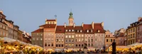
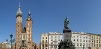
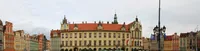
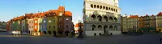
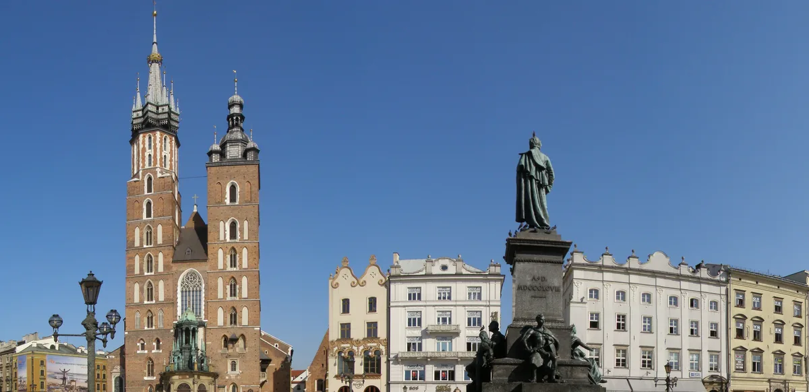

華沙老城的皇家城堡，內部收藏林布蘭畫作，週三免費入場。

克拉科夫山丘城堡，教堂與國家廳室相連，波蘭舊王城地標。
舊猶太會堂與 Szeroka 街，也是《辛德勒名單》場景。

樂斯拉夫的 UNESCO 世界遺產建築，一旁的四穹頂展館一併參觀。

波茲南的教堂島，梅什科一世曾在此受洗，是波蘭文明的起點。

從華沙出發，途經克拉科夫、樂斯拉夫與波茲南，8 天 4 城的路線把重點景點依序排開。
老城廣場、皇家城堡與 Krakowskie Przedmieście 街緊密相連，是華沙依戰前畫作逐磚重建、1980 年列入 UNESCO 的歷史核心。
紡織會館、聖瑪麗教堂與 Kazimierz 猶太區都在步行範圍內，一天走完克拉科夫舊城精華。